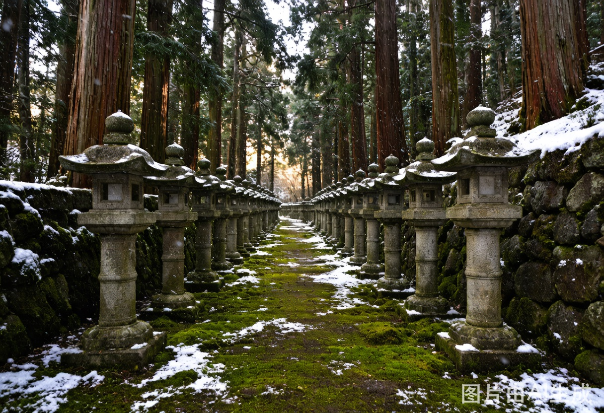
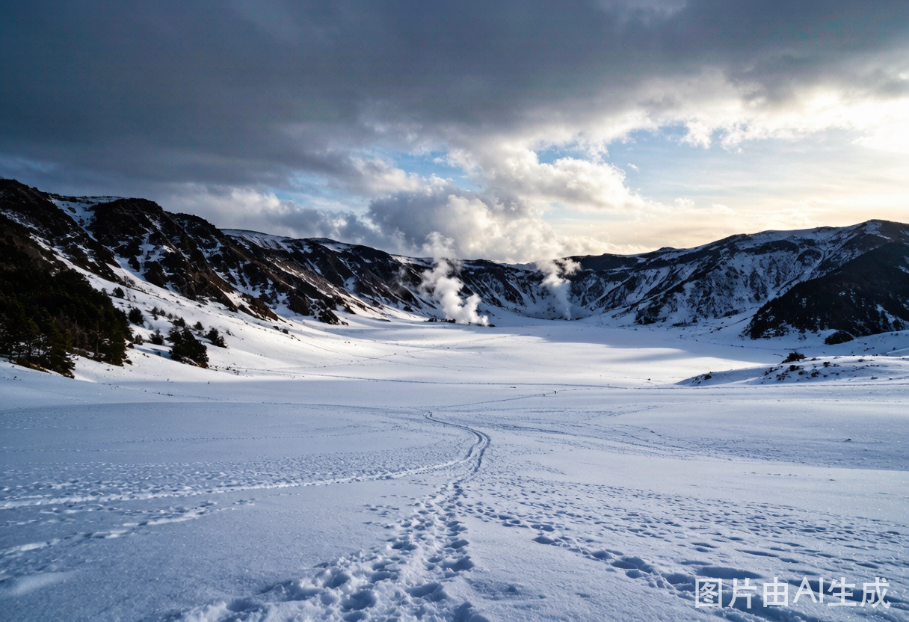
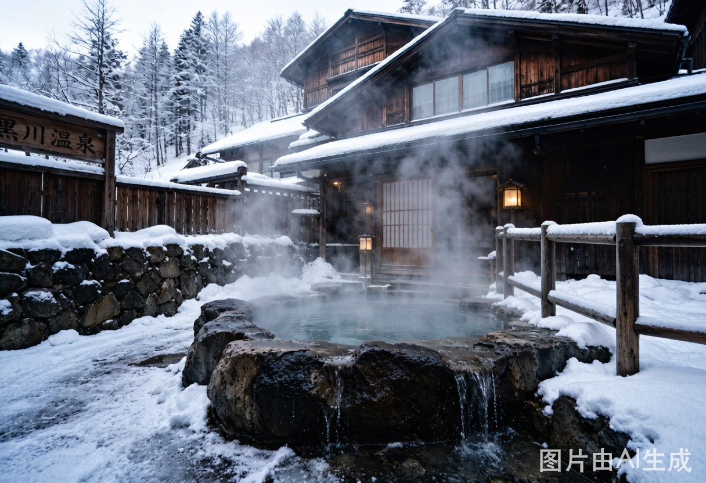
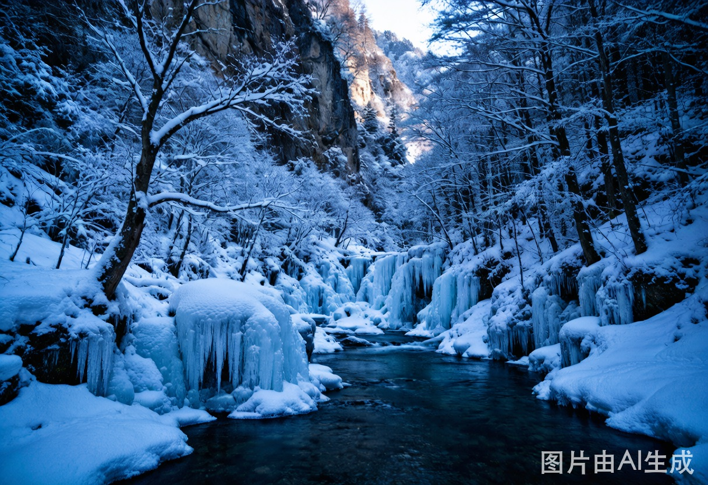
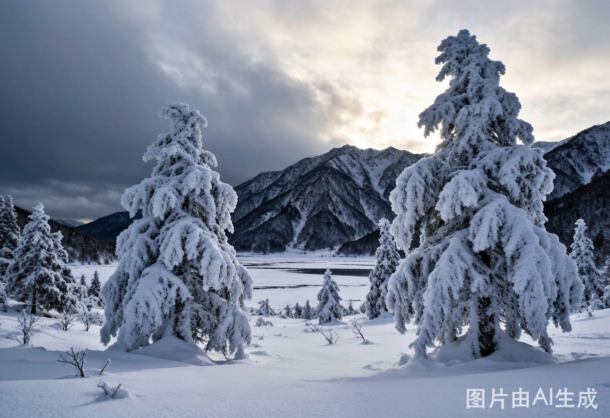
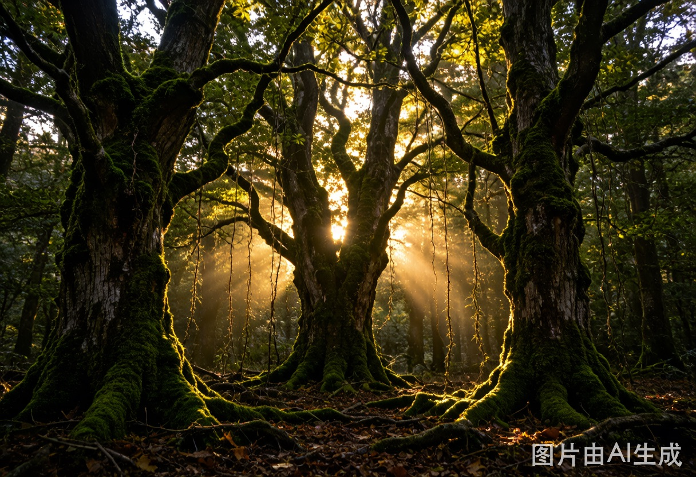

| 航线 | 深圳出发（SZX） | 香港出发（HKG） | 节省 |
|---|---|---|---|
| → 福冈（熊本线） | ¥2,500-3,500 多数需经停/转机，无廉航直飞 |
¥1,600-2,200 HK Express / 大湾区航空 直飞 3.5h |
省 ¥600-900 |
| → 东京（青森线） | ¥2,200-3,500 海南航/南航直飞 4h |
¥1,700-2,500 HK Express / 捷星 / 香港航空 直飞 4.5h |
省 ¥500-1,000 |






日本个人旅游签证，深圳户籍走广州领馆，单次签证约¥200-300。建议提前1个月办理。三年多次签现在门槛降低，有需求可以一并办。从香港出发不影响签证申请。
ICOCA/Suica 均可，Apple Wallet 直接加。九州地区用 SUGOCA 更方便，但 Suica 全国通用。新干线票建议提前在 SmartEX 预约，有早鸟折扣。
eSIM 推荐 Ubigi 或 Airalo，日本流量包很便宜。青森山区信号不稳定，提前下载离线地图（Google Maps 区域下载）。
如果只能选一个 → 青森。
理由很简单：你说想「体验冬天」，那熊本给不了你真正的冬天。阿苏山区零星积雪和青森1-2米的豪雪完全不是一个量级。奥入濑溪流冬季无人的14公里森林，加上冰瀑夜游——这种体验是「来了才懂」的级别。
而萤火之森的朝圣感确实独特，但上色见熊野座神社冬天去少了夏天的绿意苔藓，视觉冲击会打折。如果执念很深，可以选一个秋天（10-11月）单独去，那时候的苔藓和光影才是最接近动画的。
省钱要点：香港出发比深圳出发每趟省 ¥500-1,000 机票钱，廉航选择多、航班频次高，这个优势是实打实的。别忘了 HK Express 经常有促销——提前关注小程序抢票。
折中方案：十一后（11月）去熊本做萤火之森朝圣（秋末冬初苔藓还绿），过年（1-2月）去青森做深度冬旅。两次四天三晚，预算可控在 ¥9,000-15,000/人（根据选的档次）。